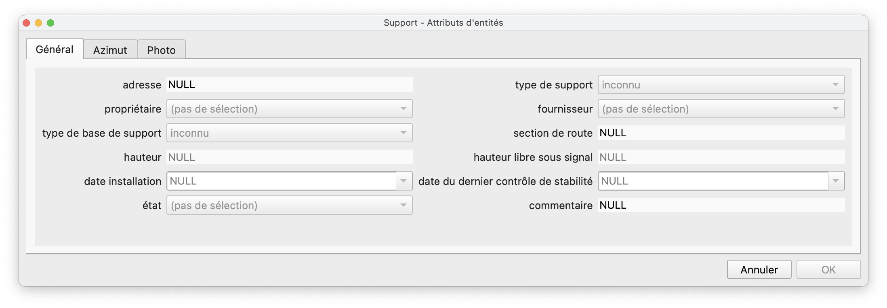
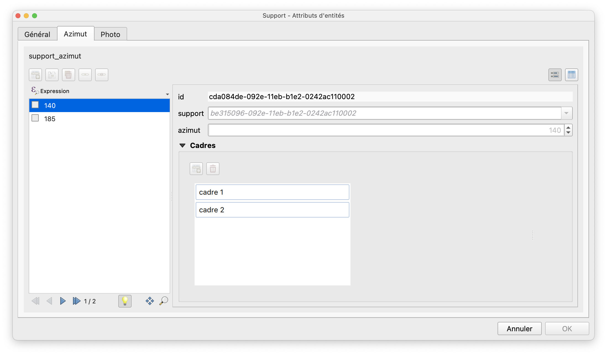
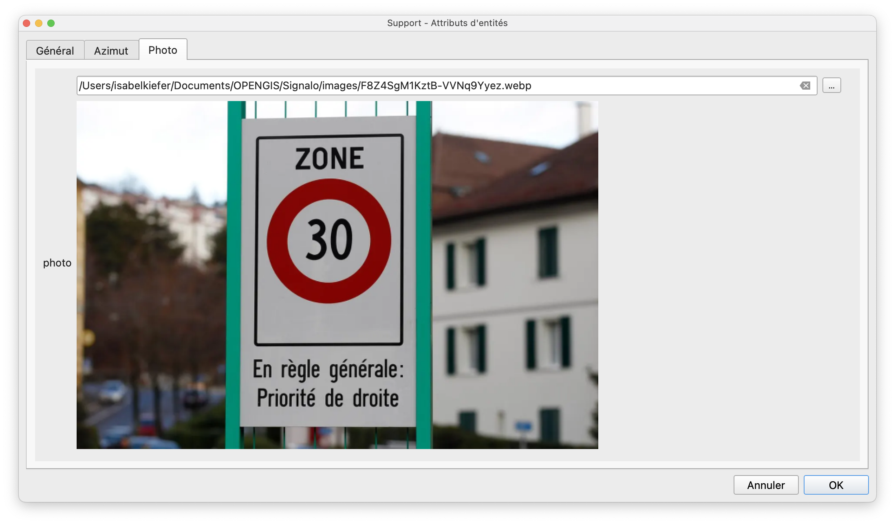

Edition
Ajout de signaux
- Mettre la couche "Support" en édition et digitaliser un point pour ouvrir le formulaire.
Le formulaire est composé de trois onglets:



Dans l’onglet “Azimut”, les cadres et signaux peuvent y être saisis. L'attribut Azimut peut être rempli de manière graphique, grâce à la vue vw_azimut_edit du schéma signalo_app.
{kind=link}
{kind=link}
Taille des panneaux
La taille des panneaux peut être ajustée dans les propriétés du projet, dans l'onglet Variables, en modifiant la variable signalo_img_size.
{kind=link}
Décalage des panneaux
En cas de supports portant de nombreux signaux, la visibilité des signaux sur la carte peut être améliorée avec les attributs offset_x et offset_y de la table azimut (attributs décalage X et décalage Y de la couche Azimut dans QGIS).
Panneaux spéciaux
Panneaux directionnels
Le modèle des données permet une gestion fine des panneaux directionnels. Trois attributs définissent l'affichage de ces panneaux:
- Dans la table
vl_official_sign(couche Signal officiel dans le projet QGIS), l'attribut booleandirectional_signdéfinit si un signal est un signal directionnel ou non. - Dans la table
frame, l'attributanchorpermet de définir le point d'ancrage du cadre: Gauche, Centré ou Droite (couche Cadre avec l'attribut point d'ancrage dans le projet QGIS). - Dans la table
sign, l'attribut booleannatural_direction_or_leftpermet de changer la direction naturelle du panneau par rapport à son point d'ancrage défini au niveau du cadre. Par défaut (la case est cochée), la direction du panneau sera à l'opposé de son point d'ancrage. C'est-à-dire, si le point d'ancrage est à droite, le panneau pointera à gauche et vice-versa. Cet automatisme peut être contourné en décochant la case direction naturel ou gauche.
Panneaux recto-verso
Au niveau du signal, (table sign, couche Signal dans QGIS) l'attribut hanging_mode ou mode d'accrochage permet de définir si un panneaux porte le même signal des deux côtés.
- VERSO -> le signal n'est affiché que d'un côté
- RECTO-VERSO -> le signal est affiché des deux côtés du panneau
-
RECTO -> le signal n'est affiché que dans le dos du panneau. Cette valeur peut être choisi p.ex. quand le recto et le verso du panneau ne sont pas identiques.
-
A noter: la couche cadre contient également un attribut lié au recto-verso (case à cocher montage recto-verso). La valeur de cet attribut n'est néanmoins qu'informative, elle n'aura aucune influence sur l'affichage du panneau sur la carte.*
Signaux définis par l'utilisateur
Il arrive qu'une certaine composition de signaux sur un même panneau n'existe pas dans la sélection des signaux officiels. La table vl_user_sign (couche Signal défini par l'utilisateur dans QGIS) permet la création de signaux personnalisés. Cette table contient les mêmes attributs que vl_official_sign, la liste des signaux officiels. Au minimum, les attributs suivants doivent être renseignés:
id- identifiant unique qui sera utilisé dans la liste déroulante dans QGISactive- à mettre sur true, autrement le signal n'apparaîtra pas dans la liste déroulante dans QGISvalue_fr, ouvalue_deouvalue_it, en fonction de la langue utilisateur - ce nom apparaîtra également dans la liste déroulante dans QGISimg_frouimg_deouimg_it, en fonction de la langue de l'utilisateur. Cet attribut doit contenir le nom exact du fichier.svgdu signal personnaliséimg_heightetimg_width- deux valeurs qui contiennent la hauteur et la largeur de l'image.svg
Les attributs suivants permettent en outre de créer et gérer des panneaux directionnels personnalisés:
directional_sign- à mettre sur true s'il s'agit d'un panneau directionnelimg_fr_right,img_de_right,img_it_right,img_ro_right, qui contiendront le nom du fichier.svgavec direction à droite, par exemple composite-r.svg. Les attributsimg_fr,img_deetc. contiendront alors le nom du fichier.svgavec direction à gauche, par exemple composite-l.svg.
Afin d'accéder à la liste déroulante des signaux définis par l'utilisateur dans QGIS, le type de signal défini par l'utilisateur doit être choisi.
{kind=link}
La création du .svg correspondant est donc dans la responsabilité de l'utilisateur. Le fichier d'image doit être enregistré dans les deux dossiers
- project > images > user-defined > original : ceci est l'image non-dynamique qui sera aussi affichée dans le formulaire d'attributs
- project > images > user-defined > editable : ceci est l'image dynamique qui permet d'afficher des inscriptions
Il est recommandé de prendre une des images officielles comme exemple et base pour créer un signal personnalisé, afin d'avoir une idée de la taille et pour comprendre comment configurer les inscriptions dynamiques.
{kind=link}
Environnements de travail
Vous avez la possibilité d'avoir plusieurs environnements de travail: test, production, … Plusieurs fichiers projets sont disponibles avec chaque version:
| Fichier projet | nom du service PG | exemple d'utilisation |
|---|---|---|
signalo.qgs |
pg_signalo |
demo |
signalo_prod.qgs |
pg_signalo_prod |
production |
signalo_dev.qgs |
pg_signalo_dev |
test et développement |
Langues
Un système de traduction du projet QGIS a été mis en place. Les fichiers de traduction signalo_XX.qm doivent se situer dans le dossier du projet QGIS. Le projet signalo.qgs s'ouvre alors dans la langue du profil de l'utilisateur QGIS. Pour le moment, le projet existe en français (langue master) et en allemand (avec le fichier de traduction signalo_de.qm). Si la langue du logiciel est l'allemand, un fichier de projet signalo_de.qgs se créera alors automatiquement à l'ouverture du projet signalo.qgs.
Filtrage et analyse de la cohérence globale
Cette fonctionnalité devrait être améliorée dans les versions suivantes.
Il est possible de filtrer l'affichage des panneaux au moyen de la couche "Vue filtrage". Avec un clic-droit sur la couche, sélectionner "Filtrer…" dans le menu. Il faut alors construire une requête pour filtrer les éléments.
{kind=link}